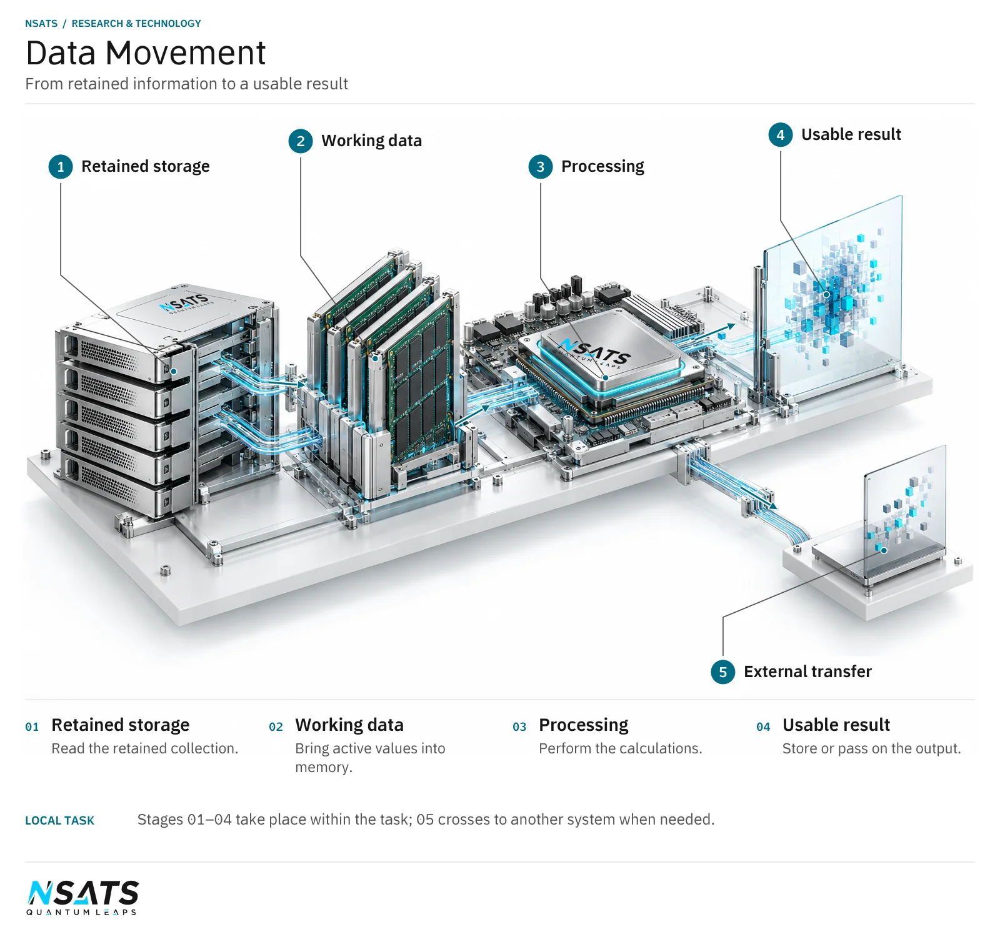

From stored data to a result
Consider a program analysing a dataset. Its work depends on information reaching the component that needs it. The connections between processors, memory and other components influence the task alongside the calculations themselves. The sequence is:
- Read the information.
- Bring working data into memory.
- Perform the calculations.
- Store or pass on the results.
Data movement is therefore part of the computing task itself.
An ordinary computer holds persistent collections on storage and active values in working memory; a calculation uses the portion relevant to its current work.
Movement also occurs when a program makes a copy for another stage. The contents may be unchanged, yet the copy requires a destination and an operation that transfers the data. Several stages can therefore create movement that is not visible in the calculation’s final mathematical result.
Movement within a device
Buses and interconnects carry information between functions inside a device. They provide paths for exchanges such as memory supplying data to a processor, or one memory region passing information to another.
NSATS’s new connection and transfer processes for these exchanges include the quantum-classical bus. The bus carries electrical signals with more than two states, beyond binary 0 and 1, which enables faster processing, data transfer and decision making within a quantum-classical electronic device. These processes improve how components supply one another with data as calculations proceed.
Processing at transfer endpoints
Data transfer can involve work at either end of the path. At a network endpoint, that work includes preparing information for transmission and reconstructing received information for use by the destination system. Inside a device, a transfer supplies information to the calculation that needs it.
An endpoint is a place where a transfer begins or ends, rather than every component along its route. In ordinary application software, the transferred material must be associated with a task and interpreted in the format that task expects. Identifying a collection and arranging its contents for the application are work in their own right.
NSATS’s technology handles this processing alongside the movement of the data. In a licensee’s design, the questions concern which component performs the work, what information it needs and how its result becomes available to the next component.
Movement between systems
A transfer between computers includes work in the sending system, passage through the network and work in the receiving system. NSATS’s quantum-classical network design places quantum-classical network cards at both endpoints, with processing in each and reconstruction of the transmitted information on receipt. The data passes through ordinary routers in between.
Within a device, the task depends on access to memory and the paths between components. Between devices, it also depends on network transfer and processing at the destination. Considering these stages together helps connect communication with the calculation it serves.
The boundary of a task need not coincide with the boundary of a computer. A user may need a result in one application that depends on information held by another system.
A distributed application divides work between computers that maintain their own local information. The receiving task needs to know which collection or version the exchange concerns. If the source changes while another task uses an earlier collection, that version distinction becomes part of the application’s requirements.
Applications
Data analysis
In data analysis, a processor needs a continuing supply of information and a route for passing on intermediate results. NSATS’s data-movement technology is designed for these exchanges. Its contribution concerns the paths serving the calculation: obtaining data from memory, delivering it to processing and returning or transferring the result for subsequent work.
A program that groups records by category may repeatedly update totals stored separately from the input records. The pattern of movement follows those updates, not just the order of the input collection. Data layout and the order of the calculation can therefore be relevant parts of an ordinary analysis workload.
Connected computing systems
When a computing task transfers information between machines, the receiving system needs usable data for its next operation. NSATS’s technology handles the processing around that exchange alongside the transfer itself. Applications include moving large datasets between computers, linking work within each endpoint to the communication between the two systems. This extends to long-distance transfer through ordinary routers and to wireless, optical and wired links.
In an illustrative analysis across connected machines, a collection system supplies measurement records to an analysis computer. The analysis groups them by measurement type and returns a summary. The source records, intermediate grouped data and returned summary are distinct collections serving different stages.
Assessing the complete task
A useful performance comparison follows information from its starting point to the result the application needs. Relevant measures include task completion time, the amount transferred over a period and the energy used to process and move the data.
The comparison should include the components carrying out the work and the operating conditions. This gives the transfer design a practical context: how it contributes to the application as a whole.
The task boundary specifies which processing and transfers are included in a performance measurement.
A measurement can count data delivered to the application separately from all the transfers performed to deliver it. Repeated copies within a task may move the same contents again. Recording the useful information requested and the exchanges required prevents the amount of internal movement from being mistaken for the amount of new information supplied to the user.
IP licensing
NSATS licenses the intellectual property for use in licensee systems. A discussion can start with the data path an application depends on: where the information begins, which components process it and where the result is needed.
A licensee can bring a description of the collections exchanged, which stages modify them and which stages only read them. Include the requests that depend on earlier results, the equipment holding each collection and the application event that marks completion. These details specify the workload as a pattern of exchanges, rather than only a total amount of data.